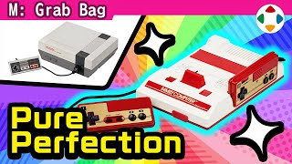
速览
樱井开发过 Famicom（家用电脑）的软件，这很幸运：作品是《星之卡比 梦之泉物语》。和他同年的游戏导演很多，但做过 FC 游戏开发的人很少——入行算早的他也是勉强赶上。FC 于 1983 年 7 月 15 日在日本发售。他实时见证的感想：在当时出类拔萃——那时其他游戏多是单色、角色粗糙、一跳一跳地慢慢走，FC 则与之划清界线：漂亮的画面、响亮的音乐与音效、流畅高速的画面处理、好操作的手柄，而且价格不算太贵，最重要的是软件好玩，可谓无敌。街机人气作《大金刚》几乎原样能在家玩，是巨大的冲击。他 1983 年发售当年就买了，按钮是方形的——他展示了当时用的手柄，已经破旧，但按钮没陷进去，很顽强：方形按钮是橡胶的，用太多会陷进去回不来，之后改成圆形，方形版大概只有最初一年多。海外则在两年后的 1985 年以 NES 登场，北美最先；其实这两年间日本的游戏技术和内容突飞猛进：发售当年是《马力欧兄弟》，1985 年已经是《超级马力欧兄弟》，差距一目了然。NES 有动作套装和豪华套装，动作套装附《超级马力欧》；同时海外市场混入了低容量时代的作品，海外玩家也许会惊讶于内容量的落差。《马力欧兄弟》24KB，《超级马力欧兄弟》40KB——看似差不多，但内容量天差地别，塞进这么小容量的技术令人惊叹。豪华套装附 R.O.B.（Robotic Operating Buddy）。FC 靠容量扩大和定制芯片实现了不像同一主机的进化：定制芯片本该在主机里，但便宜的就一张张塞进 ROM 卡带；日本 FC 还有给 ROM 用的扩展音源针脚，所以有些作品音乐比海外版更好（如《恶魔城传说》）。80 年代中后期日本掀起 FC 热潮，尤其 1988 年《勇者斗恶龙 III》成为社会现象，很多人深夜清晨在店前排队；他自己也这样在发售日买了限量的磁碟机。FC 卡带对孩子很贵，但因为 FC 占有率压倒性，大家都玩，就形成了互相借卡带的文化。若没有 FC，游戏业的形态可能完全不同——当时它就是一台梦幻机器。
1. 樱井与 FC 0:10
樱井开发过 Famicom 软件，这很幸运：作品是《星之卡比 梦之泉物语》。
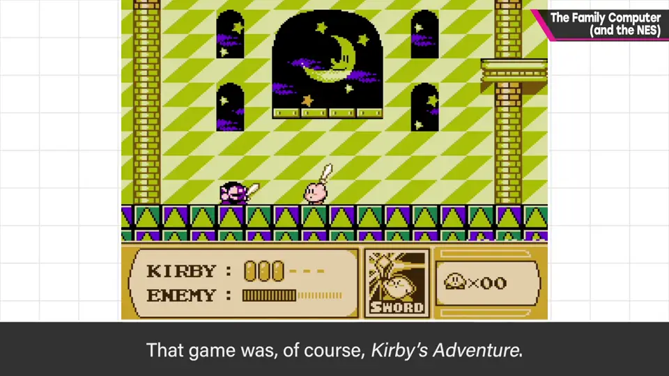
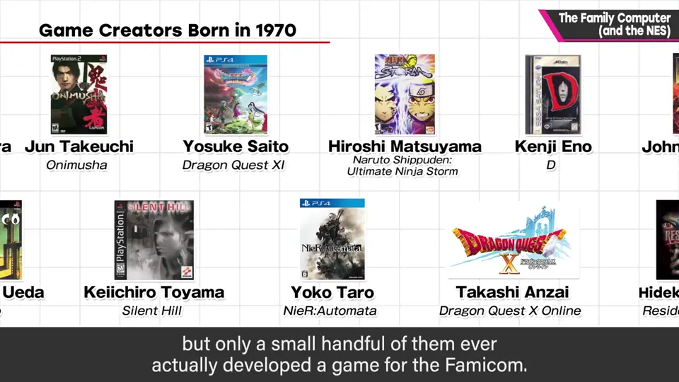
和他同年的游戏导演很多，但做过 FC 游戏的很少——入行算早的他也是勉强赶上。
2. 1983：出类拔萃的主机 0:40
FC 于 1983 年 7 月 15 日在日本发售。他的实时感想：在当时出类拔萃。
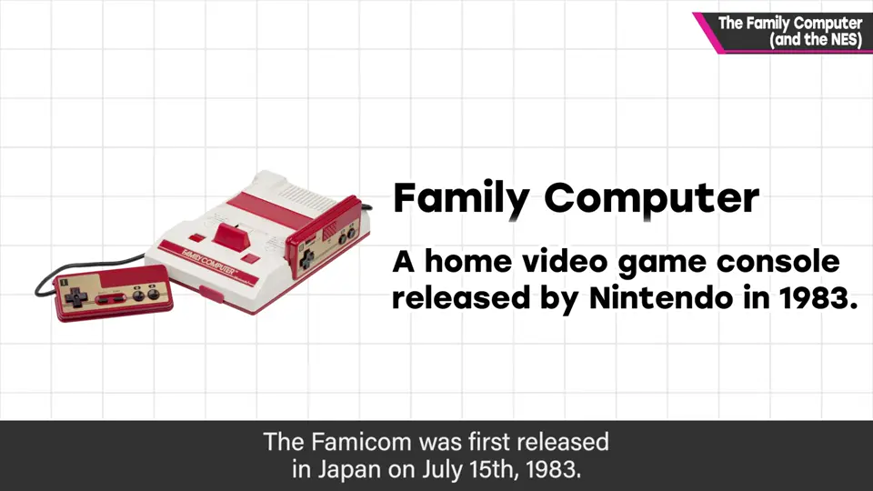
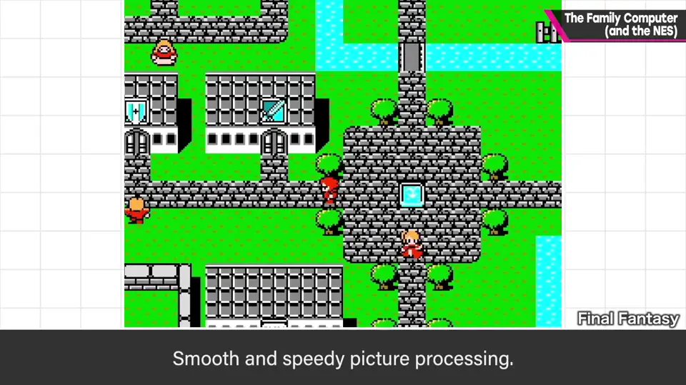
- 其他游戏多是单色、角色粗糙、一跳一跳地慢慢走。
- FC：漂亮画面、响亮的音乐音效、流畅高速的画面处理、好操作的手柄，而且不算贵。
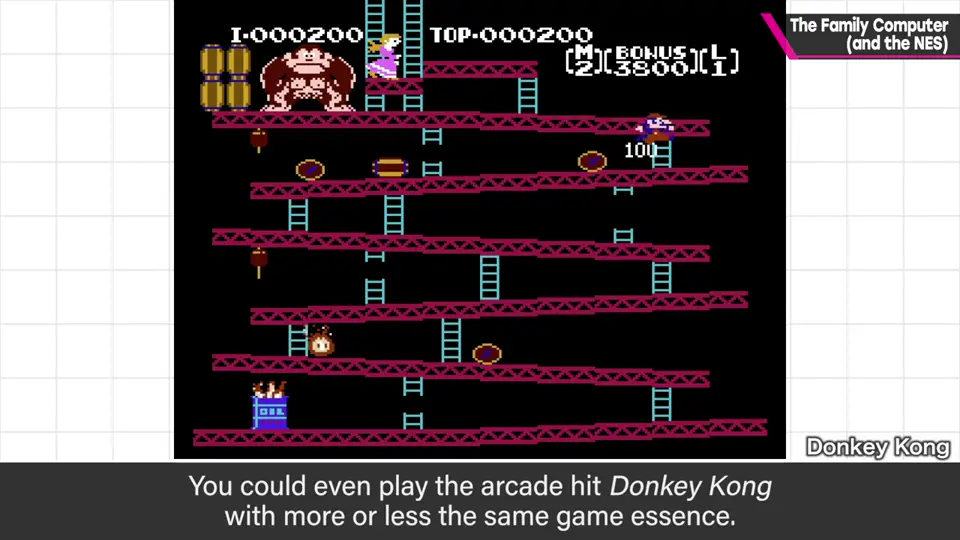
3. 方形按钮 1:26
他 1983 年就买了。按钮是方形的——这就是当时的手柄，已经破旧，但按钮没陷进去，很顽强。
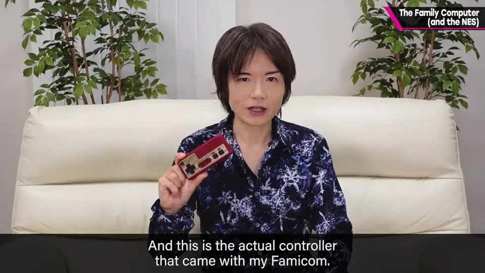
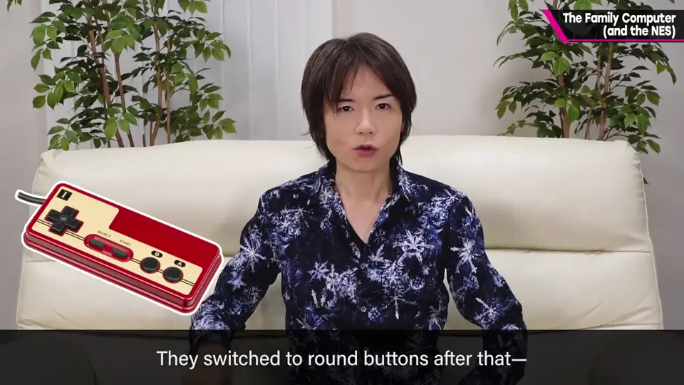
方形按钮是橡胶做的，用太多会陷进去回不来，后来改成圆形；方形版大概只有最初一年多。
4. 两年后的 NES 2:03
海外在两年后的 1985 年以 NES 登场，北美最先。这两年间日本的游戏技术与内容突飞猛进：发售当年是《马力欧兄弟》，1985 年已经是《超级马力欧兄弟》。
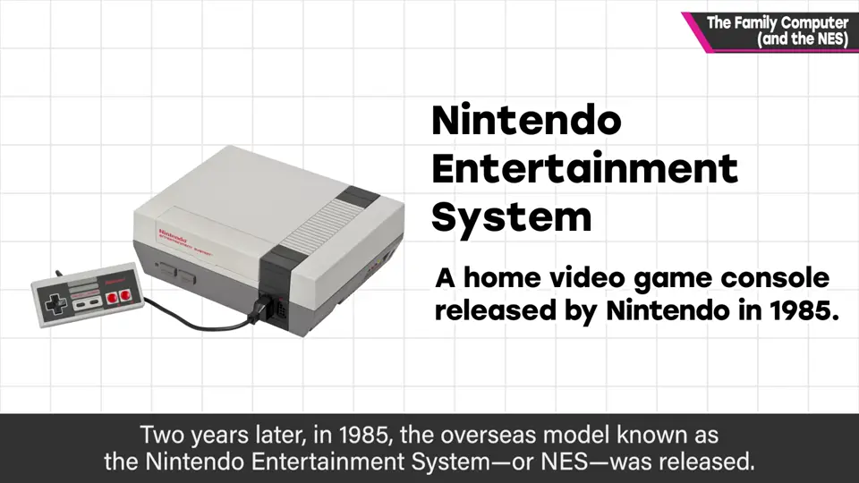
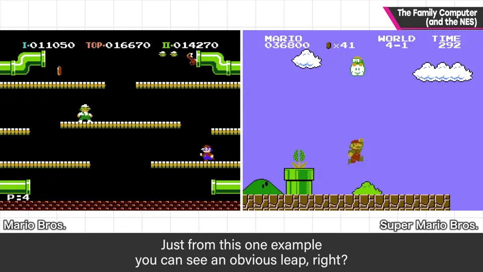
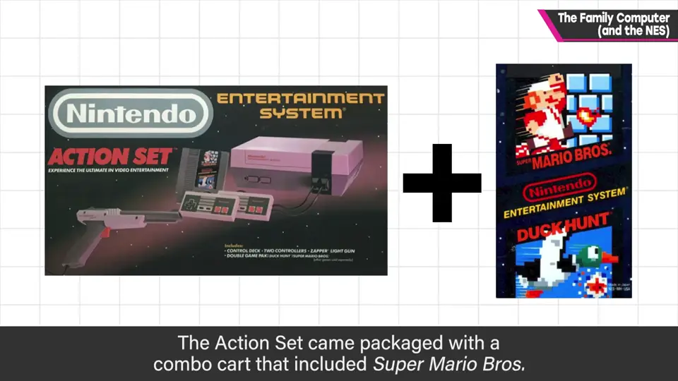
NES 动作套装附《超级马力欧》；同时海外市场混入低容量时代的作品，海外玩家也许会惊讶于内容量的落差。
| 作品 | 容量 |
|---|---|
| 马力欧兄弟 | 24 KB |
| 超级马力欧兄弟 | 40 KB |
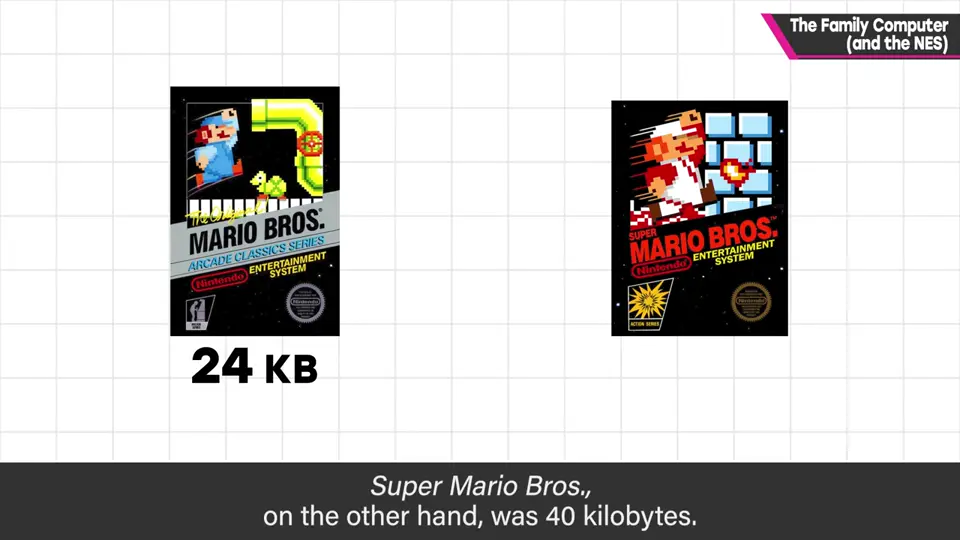
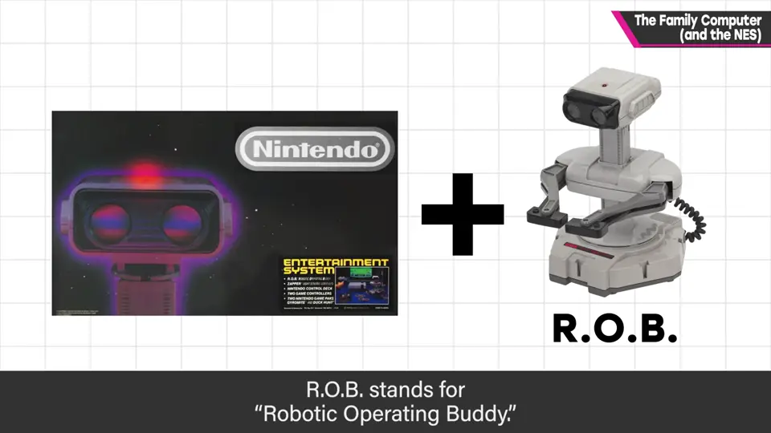
看似差不多，但内容量天差地别——塞进这么小容量的技术令人惊叹。豪华套装附 R.O.B.（Robotic Operating Buddy）。
5. 定制芯片与扩展音源 3:37
FC 靠容量扩大与定制芯片，实现了不像同一台主机的进化。定制芯片本来应在主机里，但便宜的就一颗颗放进 ROM 卡带。
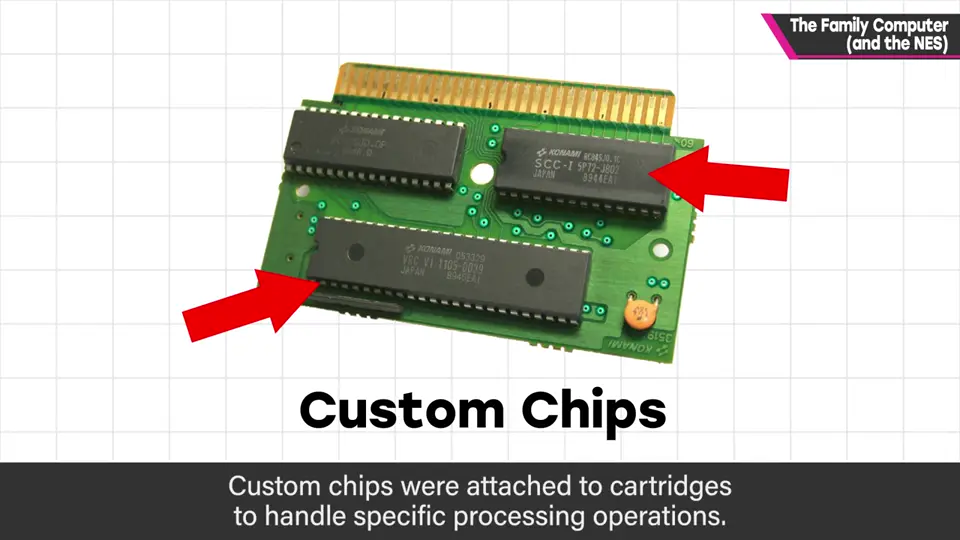
日本 FC 还有给 ROM 用的扩展音源针脚，所以有些作品音乐比海外版更好。
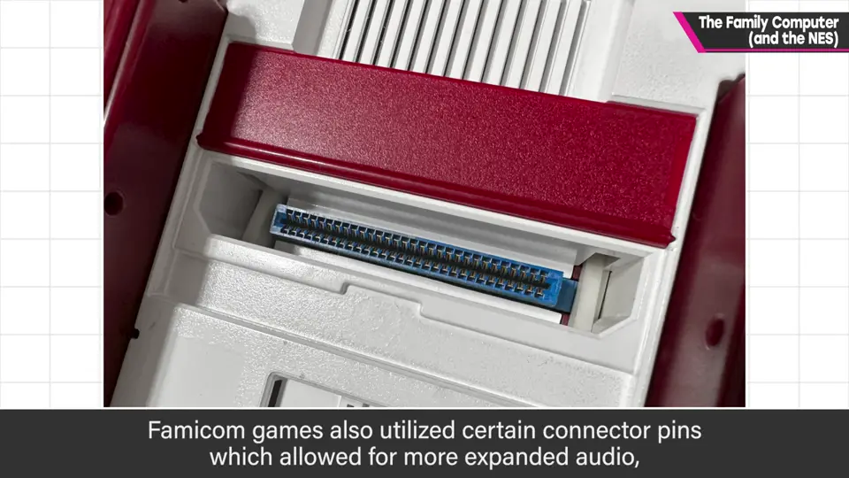
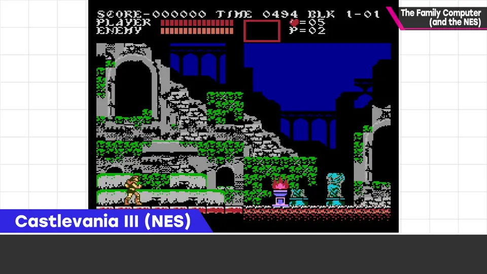
6. FC 热潮 4:20
80 年代中后期日本掀起 FC 热潮，尤其 1988 年《勇者斗恶龙 III》成为社会现象，很多人深夜清晨在店前排队。
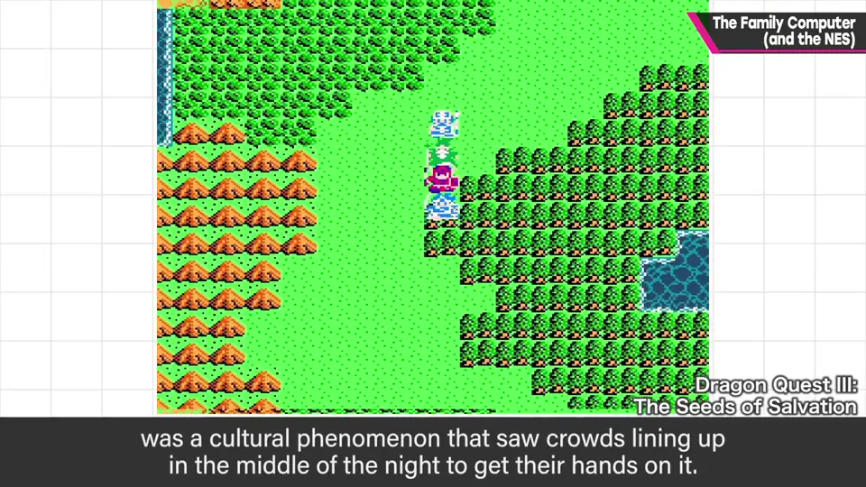
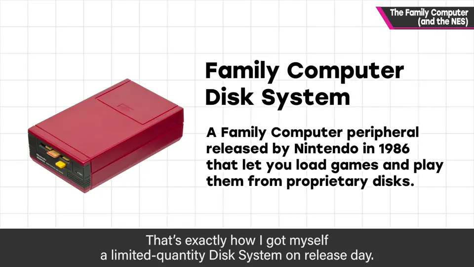
他自己也这样在发售日买到了限量的磁碟机。
卡带对孩子很贵，但 FC 占有率压倒性，大家都玩，于是形成了互相借卡带的文化。
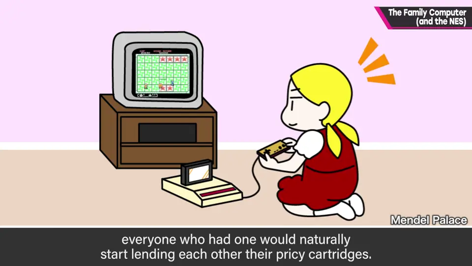
7. 梦幻机器 5:16
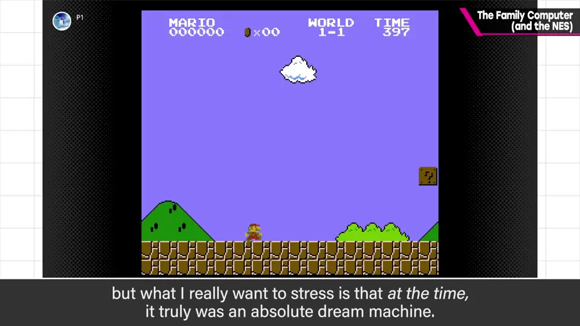
自测题
1. FC 在 1983 年为什么出类拔萃？
漂亮画面、响亮音效、流畅高速处理、好用手柄、价格不高，且软件好玩（如《大金刚》几乎原样移植）。 1:00
2. 日本 FC 与海外 NES 的发售时间差带来了什么？
两年间日本游戏技术大进步，海外市场混入新旧作品，内容量落差大。 2:10
3. FC 是怎样实现不断进化的？
ROM 容量扩大，以及卡带内加入定制芯片；日本还有扩展音源针脚。 3:44